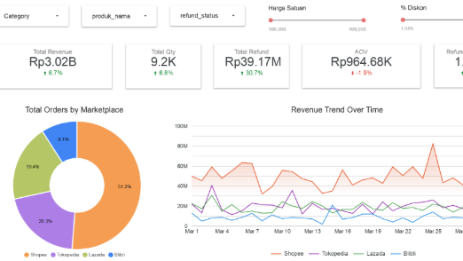
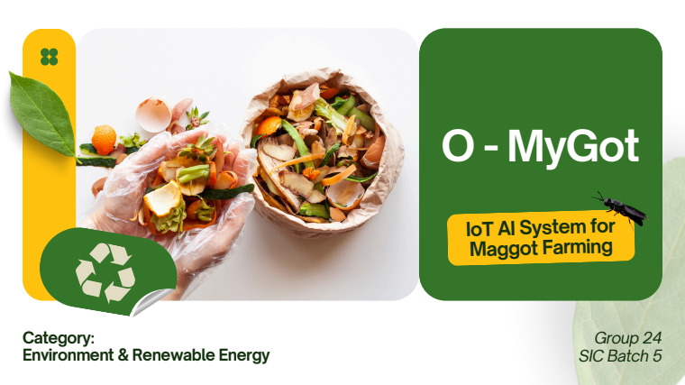

Indri Windriasari
AI Engineer | IT Educator | TensorFlow Certified
AI Engineer | IT Educator | TensorFlow Certified

Dashboard interaktif untuk analisis penjualan multi-marketplace. Mengintegrasikan pembersihan data dengan Python dan visualisasi di Looker Studio.
Analisis sentimen terhadap 184.500+ ulasan Google Play Store. Mencakup proses scraping, pre-processing teks, EDA, hingga pelatihan model.

Asisten budidaya maggot BSF berbasis Computer Vision (YOLOv9) untuk penghitungan larva otomatis, prediksi panen, dan monitoring lingkungan.
Lulusan Sarjana Komputer dari Universitas Siliwangi dengan fokus mendalam pada Machine Learning dan Artificial Intelligence. Sebagai pemegang sertifikasi TensorFlow Developer, saya bersemangat membangun solusi cerdas berbasis data.
Pengalaman saya mencakup penerapan Computer Vision untuk sektor agrikultur, hingga analisis sentimen data ulasan. Selain teknis, saya juga aktif sebagai IT Educator untuk berbagi pengetahuan di bidang teknologi terkini kepada generasi mendatang.